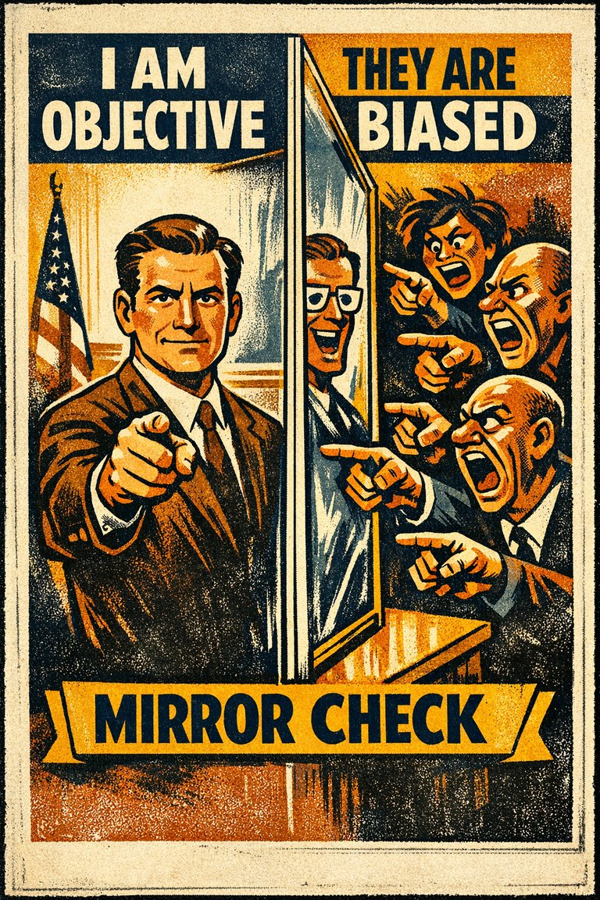

Common in shared work
84
Especially visible in households, teams, collaboration, and conflict.
Rare
Frequent

Cognitive Biases
A practical cognitive-bias site with clear definitions, learning paths, assessments, self-audits, and debiasing tools.
Cognitive Bias
Recalling the past in a self-serving manner, e.g., remembering one's exam grades as being better than they were, or remembering a caught fish as bigger than it really was. Also the tendency to rely too heavily on one's own perspective and/or have a different perception of oneself relative to others
What it distorts
Biases that bend explanations about why events happened and who or what caused them.
Typical trigger
Situations where causal attribution is already difficult and the self-perspective cue feels easier to trust than a fuller review.
First countermove
Start with the causal attribution question instead of the first intuitive answer, then check whether the self-perspective pattern is doing invisible work.
Coverage depth
Catalog entry
How much smaller would my role, burden, or objectivity look if I had to estimate it from someone else's seat?
Wikipedia groups this bias under causal attribution and the self-perspective pattern, which suggests a distortion driven by the bias is intensified by self-protection, ego, identity, or asymmetry between self and others.
These are classroom-facing editorial estimates for comparing how the bias behaves in use. They are teaching aids, not measured statistics.
Common in shared work
84
Especially visible in households, teams, collaboration, and conflict.
Easy to spot from outside
44
Often clear when each person's estimate of the same joint task is compared.
Easy to innocently commit
90
Your own effort and perception are naturally more available than everyone else's.
Teaching difficulty
42
Concrete contribution-estimation examples usually make it land fast.
This comparison makes the hidden pull easier to see before the technical label has to do all the work.
Biased move
This is like measuring the group's workload with a ruler whose zero point starts at your own effort.
Clearer comparison
Your contribution is the easiest one to feel directly, but ease of access is not the same thing as objective scale. Good perspective-taking recalibrates the ruler.
Do not use this label every time someone notices their own hardship or contribution. Sometimes their contribution really is larger. The issue is overweighting one's own share, perspective, or memory because it is more cognitively available from the inside.
Use this label when your own contribution, suffering, objectivity, or perspective is being treated as more central than a fair outside comparison would support.
Use the quick check, caveat, and nearby confusions together. The fastest diagnosis is often the noisiest one.
Each example changes the surface context while keeping the same hidden distortion in place.
Two partners each feel they are carrying more than half of the household burden because their own effort is easier to inspect from the inside.
Teammates all recall their own late nights and invisible work more readily than the quiet labor other people contributed.
People treat their own information environment or moral pressure as the obvious center of the story and underestimate how different the scene looks from elsewhere.
Your own contribution, burden, or perspective stays more vivid to you than the corresponding view available to everyone else.
Teaching note: This page is valuable because it shows how self-perspective distorts judgment even without overt self-praise.
The strongest debiasing moves change the process, not just the label.
Estimate the total contribution before estimating your own share of it.
Use external logs, explicit task lists, or contribution reviews instead of memory alone when workload disputes matter.
Design shared work so invisible effort is recorded before resentment forces everyone into retrospective arithmetic.
Practice And Repair
Egocentric bias grows wherever lived access is asymmetrical. What you did, felt, intended, or endured is easier for you to retrieve than what everyone else did, felt, intended, or endured.
A shared outcome, conflict, or memory has to be apportioned across multiple people or perspectives.
Your own contribution and perspective feel unusually vivid, detailed, and therefore proportionate.
Availability gets mistaken for scale, so your own role or objectivity quietly expands.
Estimate the same event from at least one rival vantage point and compare whether the totals can all be true at once.
What part of this estimate is inflated simply because my own effort, memory, or point of view is easier for me to access?
Spot It
Slow It
Reframe It
These are nearby labels that can share the same outer appearance while differing in what actually drives the distortion. Use the overlap, the distinction, and the diagnostic question together before settling the call.
Why it looks similar: Both can make the self look larger, cleaner, or more justified than an outside account would.
Key distinction: Self-serving bias mainly reallocates credit and blame in self-protective directions. Egocentric bias is broader and can inflate your share or perspective even before overt praise or excuse enters the picture.
Ask: Is the distortion mostly about protecting my image, or simply about overweighting my own role because it is easiest for me to access?
Why it looks similar: Both project something from the self outward onto a wider social field.
Key distinction: False consensus projects your view onto the group. Egocentric bias overweights your own standpoint or contribution before the projection step even happens.
Ask: Am I assuming others agree with me, or am I first assuming my own role or perspective deserves more central weight?
Why it looks similar: Both make the self's own viewpoint feel like the least biased starting point.
Key distinction: Naive realism says your perception feels like direct contact with reality. Egocentric bias says your own role, memory, or perspective gets overweighted because it is yours.
Ask: Is the problem that my view feels objective, or that my own contribution and vantage point feel proportionately larger than they are?
These are useful when the label seems roughly right but the process change still feels underspecified.
What part of this judgment is being inflated because my own contribution is easiest for me to recall?
How would the situation look if I had to estimate everyone else's burden with the same charity I grant my own?
What record would correct the asymmetry between inner visibility and outer visibility?
These sourced cases do not prove what was in someone's head with perfect certainty. They are teaching cases for showing where the bias pressure becomes visible in practice.
Household and group-task contribution estimates
Egocentric bias is classically taught through joint projects and household labor, where each participant recalls their own contribution more readily and therefore estimates it as larger than others do.
Why it fits: Availability from the first-person seat is being mistaken for objective proportion.
Cambridge chapter · 1982
Use these sources to move from the teaching page into the underlying literature and seed reference material. The site is still written for clarity first, but the stronger pages should also be traceable.
The classic source behind contribution overestimation and first-person availability effects in shared outcomes.
Seed taxonomy and broad coverage are drawn from Wikipedia's List of cognitive biases, then editorially reshaped into a teaching-first reference.
Once you know the bias, these nearby tools help you use the page in a real workflow rather than as a static definition.
Curated sequences where this bias commonly appears alongside a few predictable neighbors.
Short audits you can run before the distortion hardens into a decision, a verdict, or a post-hoc story.
Bias-aware AI prompts that widen the frame instead of simply endorsing the first preferred conclusion.
A mixed scenario set that can quietly pull this bias into the question bank without announcing the answer in the title first.
These neighbors were selected from shared categories, shared patterns, and explicit editorial links where available.

The tendency to attribute more blame for a mishap to the person or persons involved if they are perceived as dissimilar to the person making that judgment.

The tendency for researchers' expectations to shape what data they notice, trust, publish, or discount.

The tendency of people to see their projects and themselves as more singular than they actually are.

The tendency to explain other people's behavior too quickly in terms of character while underweighting situational pressures and constraints.

The tendency to favor, trust, defend, or positively interpret people and claims associated with one's own group more readily than comparable outsiders.

The phenomena where people tend to believe that they are more objective and unbiased than others.